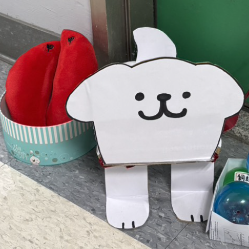

國防醫學大學 · 公共衛生學院
抗生素使用、抗藥性
與長期健康影響
大型資料庫流行病學研究
本研究室運用大型醫療資料庫與流行病學方法，評估基層醫療抗生素合理使用及其長期健康影響，探討不同族群如高齡者及孕婦之抗生素暴露風險與健康預後，並建立以風險為基礎的抗生素處方決策策略，以因應全球抗藥性公衛威脅。

 關於 PI
關於 PIOverview
抗生素抗藥性（Antimicrobial Resistance, AMR）是全球重要的公共衛生議題。隨著全球人口高齡化、慢性疾病盛行率增加及感染治療需求提升，抗生素的使用需求與累積暴露亦可能隨之增加。然而，抗生素的過度及不當使用會加速抗藥性的發展，降低抗生素的治療效益，進而增加感染治療失敗、住院及死亡的風險。此外，COVID-19 疫情期間抗生素的不當使用，也使全球抗藥性防治面臨更嚴峻的挑戰。
本研究室專注於抗生素使用及其對健康的長期影響，特別聚焦於基層醫療常見感染的抗生素合理使用。透過大型醫療資料庫與流行病學研究方法，分析不同年齡及健康狀態族群的抗生素使用趨勢，並探討抗生素重複使用與累積暴露對抗藥性、治療成效及健康預後的影響。過去研究發現，頻繁且重複使用抗生素與較高的住院及死亡風險顯著相關，尤其是曾使用多種類別抗生素及高頻率使用抗生素的族群。
本研究室亦關注抗生素暴露與母嬰健康（Maternal and Child Health）。抗生素為妊娠期間常見的處方藥物之一，其使用除了考量感染治療的效益外，亦須審慎評估對母體及子代健康的潛在影響。孕前及孕期抗生素暴露與子代健康預後之關聯，可能受到暴露時機、藥物類別、累積暴露程度及母體感染適應症等因素影響。本研究室運用臺灣全民健康保險研究資料庫及相關健康資料，探討孕前及孕期抗生素暴露與新生兒健康預後及子代長期健康之關聯，為孕期用藥安全、臨床處方決策及婦幼健康照護提供實證依據。
未來研究將進一步探討抗生素長期暴露與疾病發生之間的潛在關聯，包括腸道微生物群失衡（Gut Microbiota Dysbiosis）、抗藥性發展及慢性疾病風險。本研究室強調以風險為基礎的抗生素處方策略（Risk-based Antibiotic Prescribing），依據患者的年齡、共病狀況、感染類型、疾病嚴重程度及過往抗生素使用情形，量化個別患者接受抗生素治療的潛在效益與危害。在確保有治療需求的高風險患者獲得適切且及時治療的同時，減少低風險患者不必要的抗生素暴露，並透過實證研究優化臨床處方指引，促進抗生素合理使用與個人化治療，以降低抗藥性所造成的公共衛生威脅。
學術背景
-
2024
健康資訊學博士（PhD, Health Informatics）
Centre for Health Informatics, School of Health Sciences, Faculty of Biology, Medicine, and Health, University of Manchester, UK
-
2017
公共衛生學研究所 碩士（MSc, Public Health）
Graduate Institute of Public Health, National Defense Medical Center, Taiwan
-
2013
公共衛生學系 學士（BSc, Public Health）
School of Public Health, National Defense Medical Center, Taiwan
學術經歷
-
2027–
助理教授（Assistant Professor）
School of Public Health, National Defense Medical Center, Taipei, Taiwan
-
2024–2025
講師（Lecturer）
School of Public Health, National Defense Medical Center, Taipei, Taiwan
-
2019–2020
助教（Teaching Assistant）
Graduate Institute of Aerospace and Undersea Medicine, National Defense Medical Center, Taiwan
-
2018–2019
兼任講師（Adjunct Instructor）
School of Public Health, National Defense Medical Center, Taipei, Taiwan
-
2013–2018
助教（Teaching Assistant）
School of Public Health, National Defense Medical Center, Taipei, Taiwan
授課科目
Research interests
本研究室整合健康資訊學、流行病學與大型資料庫分析，系統性評估抗生素使用模式及其健康後果，涵蓋基層醫療合理用藥、母嬰健康、高齡化抗生素使用挑戰，以及風險為基礎的處方決策策略。
大型資料庫流行病學方法
發展適用於電子病歷與病患資料庫的流行病學分析方法，包含傾向分數匹配、工具變數及時間序列分析。
抗生素合理使用與長期健康影響
分析基層醫療常見感染之抗生素處方模式與時間趨勢，探討重複暴露與累積使用對抗藥性、治療成效及健康預後的影響，建立合理使用指標。
抗生素暴露與母嬰健康
運用臺灣健保研究資料庫，探討孕前及孕期抗生素暴露與新生兒健康預後及子代長期健康之關聯，為孕期用藥安全提供實證依據。
風險為基礎的抗生素處方策略
依據患者年齡、共病、感染類型及過往用藥史，量化個別患者抗生素治療的潛在效益與危害，優化處方決策以促進合理使用。
高齡化抗生素使用挑戰
探討高齡族群感染治療需求增加所帶來的抗生素累積暴露問題，分析共病、多重用藥及免疫功能下降對抗藥性風險與治療預後的影響。
Lab R4211
歡迎具備公共衛生、流行病學、統計或健康資訊背景的研究生加入。
鈺婷
博士研究生
專長是管理老師時間
碩士研究生
母親孕前及孕期系統性抗生素處方與新生兒需光療黃疸及足月低出生體重之關聯：2016–2024年臺灣全民健康保險資料庫世代研究
碩士研究生
台灣常見呼吸道感染門診之口服抗生素處方型態與時間趨勢：2016–2024年全國性健保申報資料研究
在職碩士研究生
共同指導老師：航太海底所 潘科婷助理教授
醫院藥局室內空氣品質與工作人員病態建築症候群之相關性研究
大學部專題生
COVID-19疫情對臺灣門診抗生素處方之影響：中斷時間序列分析
小白
研究室吉祥物
守護 R4211，專長：陪伴、解壓、提升研究室幸福感
＋ 加入我們
歡迎申請
Research output
完整發表清單請見 ResearchGate 個人頁面。
第一作者論文
Exploring Prior Antibiotic Exposure Characteristics for COVID-19 Hospital Admission Patients: OpenSAFELY
Antibiotics (Basel) 13(6):566 (2024) · IF 4.3 · PHARMACOLOGY & PHARMACY, Q1, 74/354
Repeated antibiotic exposure and risk of hospitalisation and death following COVID-19 infection (OpenSAFELY): a matched case–control study
eClinicalMedicine 61, 102064 (2023) · IF 15.1 · MEDICINE, GENERAL & INTERNAL, Q1, 10/327
The impact of the COVID-19 pandemic on the treatment of common infections in primary care and the change to antibiotic prescribing in England
Antimicrobial Resistance & Infection Control 12, 102 (2023) · IF 5.5 · PUBLIC, ENVIRONMENTAL & OCCUPATIONAL HEALTH, Q1, 69/400
共同作者論文
Arrhythmia and cardiomyopathy risk in Taiwan with complementary biobank evidence on thyroid genetic susceptibility: an integrative population-based framework
Endocrine Connections 15(8) (2026) · IF 3.4 · Q2
Antibiotics for common infections in primary care before, during and after the COVID-19 pandemic: cohort study of extent of prescribing based on risks of infection-related hospital admissions
Journal of the Royal Society of Medicine 118(4):126–137 (2025) · IF 16.3 · MEDICINE, GENERAL & INTERNAL, Q1, 18/333
Evaluation of the impact of COVID-19 pandemic on hospital admission related to common infections
PLoS ONE 19(12):e0311515 (2024) · IF 2.9 · MULTIDISCIPLINARY SCIENCES, Q1, 33/135
Impact of COVID-19 on broad-spectrum antibiotic prescribing for common infections in primary care in England: a time-series analyses using OpenSAFELY and effects of predictors including deprivation
The Lancet Regional Health – Europe 30, 100653 (2023) · IF 20.9 · HEALTH CARE SCIENCES & SERVICES, Q1, 1/168
The impact of COVID-19 on antibiotic prescribing in primary care in England: Evaluation and risk prediction of appropriateness of type and repeat prescribing
Journal of Infection 87(1):1–11 (2023) · IF 28.2 · INFECTIOUS DISEASES, Q1, 4/129
Projects
| 期間 | 計畫名稱 | 補助單位 | 角色 |
|---|---|---|---|
| 2026/1–2026/12 | 常見感染症開立抗生素之風險效益評估 1/3 | 國防醫學研究 | PI |
| 2025/2–2025/3 | 邀請曼徹斯特大學 Prof. Tjeerd van Staa 來臺學術訪問 補助編號 114-2912-I-016-505 |
國家科學及技術委員會 |
Press/Media
Study links overuse of antibiotics with severe COVID-19 side effects
報導本室 eClinicalMedicine 研究成果：運用 NHS OpenSAFELY 平台分析 67 萬名 COVID-19 患者，發現過去三年內抗生素使用頻率越高、種類越多，與 COVID-19 住院及死亡風險顯著相關。研究涵蓋 55 種抗生素，住院最高風險組勝算比達 1.8 倍。
合作與加入
歡迎對抗生素流行病學、健康服務研究或抗藥性議題有興趣的研究者聯繫，討論合作機會或申請加入實驗室。
地址
國防醫學大學 公共衛生學院
114 台北市內湖區民權東路六段161號 R4211
電話 02-8792-3100 分機 18443
學術連結
母親孕前及孕期系統性抗生素處方與新生兒需光療黃疸及足月低出生體重之關聯
陳芷姍 · 碩士研究生 · 健康服務評估及抗生素流行病學研究室
研究背景與重要性
抗生素為妊娠期間常見之處方藥物，廣泛應用於母體細菌感染之治療與預防。然而，孕期抗生素處方與子代健康預後之關聯，可能受到暴露時間、藥物類別、累積暴露程度及母體感染適應症等因素影響。既有研究對孕期抗生素暴露與新生兒黃疸及出生體重之關聯尚未具有一致結論，且不同研究之暴露定義與混雜因子控制方式存在差異。臺灣全民健康保險研究資料庫具有長期就醫及處方申報紀錄，可用於評估孕前及孕期抗生素暴露與新生兒不良預後之關聯，提供孕期用藥安全與婦幼健康照護之實證參考。
研究目的
探討母親孕前一年及妊娠期間系統性抗生素處方，與子代需光療新生兒黃疸及足月低出生體重之關聯，並評估抗生素類別、累積暴露量及感染適應症之影響。
研究方法
採回溯性世代研究，使用2014至2024年全民健康保險研究資料庫，建立2016至2024年單胎活產母嬰世代。利用住院申報、新生兒依附就醫及承保資料連結母嬰，並參考階層式演算法推估末次月經日與孕週。以WHO ATC J01類辨識系統性抗生素，劃分孕前一年與三孕期暴露窗口，計算處方率、藥物類別、抗菌光譜、累積處方天數及定義每日劑量（DDD）。需光療黃疸定義為出生後28天內黃疸診斷合併光療醫令；足月低出生體重定義為估計孕週達37週且具出生體重低於2500公克之診斷碼。以改良式Poisson迴歸估計調整後相對風險及95%信賴區間，並進行感染適應症分層、逆機率治療加權與敏感度分析。
關鍵字
醫院藥局室內空氣品質與工作人員病態建築症候群之相關性研究
歐美君 · 在職碩士研究生 · 健康服務評估及抗生素流行病學研究室
研究背景
醫院藥局具有不同的空間功能、作業型態、人員密度及通風條件，其室內空氣品質可能隨工作場域與時間而產生差異。工作人員長時間處於室內環境，除可能受到溫度、相對濕度、二氧化碳、細懸浮微粒及總揮發性有機化合物等環境因子影響外，對音、空間、光、溫熱及空氣環境之主觀感受，亦可能與疲勞、頭痛、眼睛刺激、呼吸道及皮膚不適等病態建築症候群（Sick Building Syndrome, SBS）症狀相關。然而，既有醫院室內空氣品質研究多集中於病房、手術室及重症照護單位，針對醫院藥局不同工作場域進行長期監測，並整合工作人員主觀環境感受與SBS症狀之研究仍相對有限。
研究目的
描述及比較醫院藥局不同工作場域之室內空氣品質特性及其時間變化，探討研究對象之人口學與工作特性、個人感受、相關認知及主觀環境感受與心率、整體SBS有無及一般、眼睛、呼吸道與皮膚症狀程度之關聯，並針對同時具有監測及問卷資料之工作場域，探索場域層級室內空氣品質特性與SBS分布之可能關係。
研究方法
採橫斷式問卷調查結合回溯性室內空氣品質監測資料之觀察性研究設計。監測資料為2024年9月至2025年8月於北部某醫學中心藥學部8個場域（化療藥局、中藥局、住院藥局、臨床試驗藥局、門診藥局、門診大廳、藥物諮詢室及總藥師辦公室）之連續監測，指標包含溫度、相對濕度、CO₂、PM₂.₅及TVOC。問卷調查最終納入44份有效問卷，資料以非參數統計為主（Mann–Whitney U、Kruskal–Wallis、Spearman等級相關、Fisher精確檢定），顯著水準α＝0.05。
預期結果與貢獻
預期不同藥局工作場域之室內空氣品質指標呈現不同時間與空間分布特性；人口學特性、個人感受、主觀環境感受與SBS症狀程度可能呈現不同程度之關聯。研究結果可作為醫院藥局室內環境管理、工作人員健康促進及後續職業健康研究之參考。
關鍵詞
Clinical outcomes following antibiotic use in primary care: evaluating the benefits, harms, and risk factors for hospital admission
Ya-Ting Yang · PhD Thesis · University of Manchester, UK · 2024
Background
Antibiotic use is a critical global health issue, as increased consumption is strongly linked to antimicrobial resistance (AMR). Repeated intermittent use of antibiotics is associated with adverse health outcomes, likely due to treatment failures from resistant strains or disruption of gut microbiota. In the UK, the majority of antibiotics are prescribed in primary care, and the COVID-19 pandemic may have altered infection management in this setting.
Research Aims
This thesis aimed to: (1) evaluate primary care antibiotic treatment pathways during the COVID-19 pandemic; (2) investigate the relationship between antibiotic exposure and severe COVID-19 outcomes; (3) explore detailed antibiotic exposure characteristics related to COVID-19 hospitalisation; and (4) simulate the benefits and harms of antibiotic prescribing using number-needed-to-treat (NNT).
Data Sources
Two primary care databases were utilised: The Phoenix Partnership (TPP) EHR via OpenSAFELY, covering 40% of the population in England, and the Clinical Practice Research Datalink Aurum (CPRD Aurum), covering 20% of the UK population.
Key Findings & Conclusions
The COVID-19 pandemic significantly impacted primary care prescribing practices. While bacterial co-infections are uncommon in COVID-19 patients, they are linked to higher mortality, and repeated antibiotic exposure may contribute to severe outcomes, possibly due to gut microbiota disruption and AMR. This thesis highlights the importance of antibiotic stewardship programmes to carefully balance clinical benefits and potential harms, especially given their minimal effectiveness in reducing hospital admissions for conditions such as cough and sore throat. These findings emphasise the need to re-evaluate routine antibiotic prescribing and develop tailored guidance that considers individual antibiotic history.
Keywords
台灣常見呼吸道感染門診之口服抗生素處方型態與時間趨勢：2016–2024年全國性健保申報資料研究
劉安舜 · 碩士研究生 · 健康服務評估及抗生素流行病學研究室
研究背景
抗生素使用量監測可呈現整體用藥變化，但難以區分感染就診量、患者人口學特性、處方比例及處方內容的影響。本研究旨在描述台灣常見呼吸道感染門診之口服抗生素處方型態與時間趨勢，並比較不同醫療機構層級、年齡及性別的差異。
研究方法
本研究為回溯性觀察研究，擬使用2016–2024年全民健康保險研究資料庫全檔申報資料，納入全年齡於醫學中心、區域醫院、地區醫院及基層診所的上呼吸道感染、鼻竇炎與下呼吸道感染門診。以就診為分析單位，串接門診申報、醫令及院所資料，依藥品清單辨識口服全身性抗生素。研究將呈現每月處方比例、年度藥物組成、處方型抗生素藥物日數（DOT）及抗生素光譜涵蓋天數（DASC），各指標依所需資料完整性界定分母。另以限制立方樣條羅吉斯迴歸描繪年齡—性別處方曲線，採病人群集穩健標準誤，並進行遠距醫療次分析及年齡性別標準化補充比較。
預期貢獻
預期建立具一致操作定義的全國性門診處方基準，呈現感染別處方比例、藥物選擇與光譜涵蓋量的變化，供後續抗生素管理及處方行為研究參考。